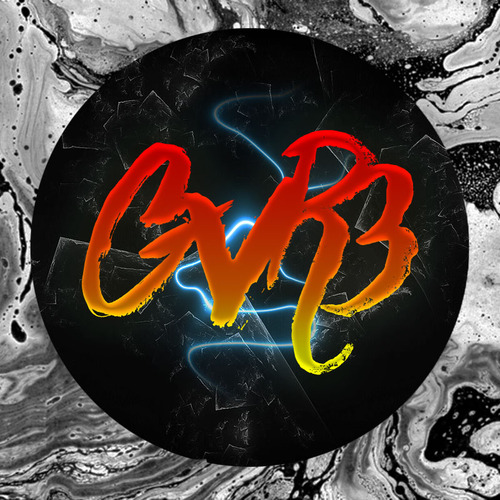

Chi Sono

Ciao, sono Ivano Saracino
Sono uno sviluppatore web appassionato con esperienza in diverse tecnologie e framework. La mia missione è creare soluzioni web innovative, user-friendly e performanti.
La mia formazione
Ho conseguito una laurea in [Tuo Corso di Laurea] presso [Nome dell'Università]. Durante il mio percorso accademico, ho approfondito le mie conoscenze in [elencare alcune materie rilevanti].
Le mie competenze principali
- Sviluppo front-end con HTML5, CSS3 e JavaScript
- Programmazione back-end con PHP e Java
- Sviluppo di applicazioni web con Spring Boot
- Creazione di siti web con WordPress
- Gestione di database SQL e NoSQL
- Utilizzo di sistemi di controllo versione Git
Esperienze lavorative
- [Breve descrizione di un'esperienza lavorativa o progetto rilevante]
- [Breve descrizione di un'altra esperienza lavorativa o progetto rilevante]
Interessi personali
Quando non sono immerso nel codice, mi piace [inserisci i tuoi hobby o interessi]. Credo che questi interessi mi aiutino a mantenere una prospettiva fresca e creativa nel mio lavoro.
Contattami